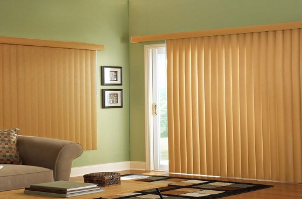
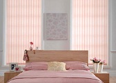
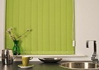
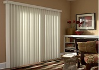

ЦЕНИТЕ СА С ВКЛЮЧЕН ДДС
ЦЕНИТЕ СА С ВКЛЮЧЕН ДДСВертикални Щори

цени от 5,93лв/м2 за плат
цени от 14,32лв/л.м. за корниз
Ценови каталози
плат и корниз
алуминиеви ленти и корниз
схеми на управление
Описание
  Вертикалните щори са едно изключително интересно решение за създаване на неповторим интериор и уют във вашия дом или офис. Те придават допълнителен стил и елегантност на стаите ви като спомагат за визуалното увеличаване на височината на помещенията. Те са идеалния заместител на пердетата и завесите в дома ви. Най- предпочитани са за спални помещения или за стаи за гости заради представителния им вид, като най- често се монтират върху големи прозорци, витрини, плъзгащи се прозорци или цели стени. Има възможност да се изработят и за наклонени или дъгообразни прозорци.
Чрез вертикалните щори се постига идеален контрол на светлината. Те не само предлагат комфорт за очите, но предпазват вашите мебели от вредно въздействащите слънчеви лъчи. Висококачествените вертикални щори също имат и шумопоглъщащи свойства. Те са още и енергоспестяващи и със 100 процентово съдържание на полиестер.
Лентите, от които са изградени вертикалните щори, са текстилни или алуминиеви като се предлагат в общо 339 цвята, 3 модела релсови механизми, 8 схеми за управление и събиране на плата, за ръчно или електронно задвижване. Текстилните ламели се изработват от висококачествени платове, внос от Италия или Испания, като варират в широк диапазон- от леки и полупрозрачни SCREEN материали до напълно непропускливи BLACK OUT(40%-90%)модели. Материалите са още антистатични, отблъсващи прах и дим и са лесни за поддръжка. В допълнение щорите се предлагат с декоративен корниз, който придава завършен вид на изделието.
Изберете ли вертикалните щори Вие ще си осигурите един неподражаем и стилен интериор.